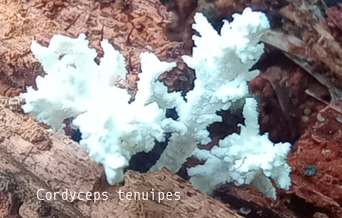
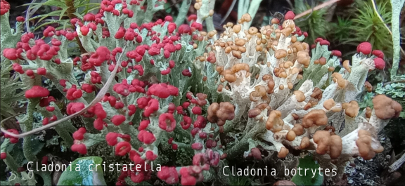
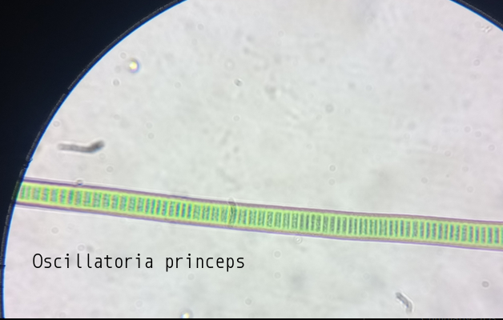
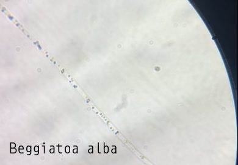
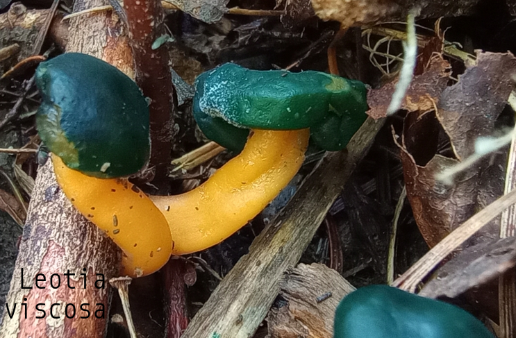

-

Cladonia cervicornis ssp. verticillata
Cladonia cervicornis ssp. verticillata, also known as ladder lichen, is a cup lichen that is similar to Cladonia cervicornis but has distinct features. Color: Cladonia verticillata is a paler green-grey color, while Cladonia cervicornis is browner. Podetia: Cladonia verticillata has podetia with cups that are arranged in tiers, often stacked in scaffolds of two or three. Cladonia cervicornis has fewer podetions and never multi-storey. Basal squamules Cladonia verticillata has rounded and short basal squamules. Cladonia cervicornis has longer, more indented basal squamules. Habitat: Cladonia verticillata is found in more acidic and damper habitats than Cladonia cervicornis. It is typically found on sandy soil in aerohaline healthlands. Cladonia species are economically important to reindeer-herders and some species can be used to create antibiotic cream.
Kingdom: Fungi
Phylum: Ascomycota
Class: Lecanoromycetes
Order: Lecanorales
Family: Cladoniaceae
-

Urceolus cyclostomus
Urceolus cyclostomus is a species of flagellate, a single-celled protist that exhibits an emergent flagellum for movement. Members of the genus Urceolus are distinguished by the presence of a 'neck' at the anterior end of their oval-shaped cell, followed by a wide aperture or 'mouth' into a deep canal where the feeding groove and the flagellum originate. In addition, like other euglenids, the cell surface or pellicle is spiral-striped. In particular, U. cyclostomus is distinguished from other species of the genus by its more or less rigid and regular body shape, a less developed 'ingestive organelle' or feeding apparatus, and a more conspicuous 'hatching' (i.e. more pronounced stripes) of the pellicle. The posterior end of the cell is narrow, as is common in other euglenids. The cells are ovate, measuring 14–30 μm long and 4–18 μm wide. The cells move by crawling through the substrate, with the posterior end raised. The flagellum is around 1.5 times longer than the cell itself, 40–50 μm.
Kingdom: Protozoa
Phylum: Euglenozoa
Class: Euglenida
Order: Peranemida
Family: Peranemidae
-

Gomphonema acuminatum
Valves clavate, tumid at the center with two constrictions along the margin; at the headpole the valve is broad and then becomes apiculate at the headpole, the footpole is rounded. The axial area is narrow, straight, until broadening to form an irregular central area. The raphe is lateral and undulate.
Kingdom: Chromista
Phylum: Ochrophyta
Class: Bacillariophyceae
Order: Cymbellales
Family: Gomphonemataceae
-

Cladonia pyxidata
Podetia 0.5–1.5 (–3) cm tall, grey, occasionally ± brownish; cups 3–10 mm diam., ± regular, rarely proliferating from the rim, tapering regularly towards the base, stalk very short or hardly present; surface uneven with coarse, smooth, corticate granules, particularly well-developed within the cups, often with scattered, partially decorticate pale areas; soredia absent. Basal squamules often rather small, rounded or elongate, with few indentations, sparse or often abundant, becoming ± erect. Apothecia and pycnidia brown, common, on cup rim; apothecia often shortly elevated. Thallus C–, K–, KC– , Pd+ red, UV– (fumarprotocetraric acid).
Kingdom: Fungi
Phylum: Ascomycota
Class: Lecanoromycetes
Order: Lecanorales
Family: Cladoniaceae
-

Ambystoma maculatum
The spotted salamander or yellow-spotted salamander (Ambystoma maculatum) is a mole salamander common in eastern United States and Canada. It is the state amphibian of Ohio and South Carolina. The species ranges from Nova Scotia, to Lake Superior, to southern Georgia and Texas. Its embryos have been found to have symbiotic algae living in and around them, the only known example of vertebrate cells hosting an endosymbiont microbe (unless mitochondria are considered).
Kingdom: Animalia
Phylum: Chordata
Class: Amphibia
Order: Caudata
Family: Ambystomatidae
-

Euplotes sp unknown
Euplotes cells are inflexible, dorsoventrally flattened, and roughly ovoid, with a very large oral region (peristome) bordered on the left by a long "adoral zone of membranelles" (AZM). Like other spirotrich ciliates, Euplotes move and feed with the help of compound ciliary organelles called "cirri," made up of thick tufts of cilia sparsely distributed on the cell. Strong cirri on the ventral surface of the cell enable Euplotes to walk or crawl on submerged detritus and vegetation. All species of Euplotes have a group of stiff bristles (caudal cirri), which protrude from the posterior of the cell. The number of caudal cirri varies, even within a species, but it is most common for Euplotes to have 4 or 5. The macronucleus is typically long and narrow, and approximately horseshoe-shaped, C-shaped, or resembling the number 3.
Kingdom: Chromista
Phylum: Ciliophora
Class: Spirotrichea
Order: Euplotida
Family: Euplotidae
-

Cosmarium regnesi
Cosmarium regnesi is a microscopic, unicellular green alga. The cells are divided across an isthmus into two mirrored parts called semicells. The semicells are each roughly rectangular with large granules at the angles and along some of the margins. Cosmarium regnesi is relatively small but quite distinct. It could be mistaken for an isolated cell of Teilingia.
Kingdom: Plantae
Phylum: Charophyta
Class: Zygnematophyceae
Order: Desmidiales
Family: Desmidiaceae
-

Stauridium tetras
Stauridium forms flat colonies, termed coenobia, of cells in powers of two, usually four, eight, or 16. Coenobia are disc-shaped in outline, composed of cells laid contiguously next to each other with no spaces in between cells. The marginal cells are trapezoidal, with (in S. tetras) or without (in S. privum) a V-shaped incision in the middle. The cell wall is smooth or covered in granules, warts, or ridges. Cells have one chloroplast filling the cell, each with a single pyrenoid. Species of Stauridium have thin cell walls, so they tend not to preserve well in sediments.
Kingdom: Plantae
Phylum: Chlorophyta
Class: Chlorophyceae
Order: Sphaeropleales
Family: Hydrodictyaceae
-

Litonotus cygnus
Body laterally compressed, highly elongate with anterior neck-like region which bends towards the dorsal edge. Oral aperture a slit, on convex edge of neck extending less than halfway down the body. Ciliation present on both lateral surfaces. Ciliation on right surface takes the form of parallel longitudinal rows which do not converge on each other. There are some longer cilia on the neck region forming a mane-like structure. Trichocysts sometimes present. Macronucleus commonly in two spherical parts with single micronucleus wedged between the two. One to several contractile vacuoles present.
Kingdom: Chromista
Phylum: Ciliphora
Class: Gymnostomatea
Order: Pleurostomatida/p>
Family: Litonotidae
-

Notophthalmus viridescens
The red eft (juvenile) stage is a bright orangish-red, with darker red spots outlined in black. An eastern newt can have as many as 21 of these spots. The pattern of these spots differs among the subspecies. An eastern newt's time to get from larva to eft is about three months. During this stage, the eft may travel far, acting as a dispersal stage from one pond to another, ensuring outcrossing in the population. The striking coloration of this stage is an example of aposematism — or "warning coloration" — which is a type of antipredator adaptation in which a "warning signal" is associated with the unprofitability of a prey item (i.e., the saturation of the eft's tissues with tetrodotoxin) to potential predators.[8] Their tetrodotoxin is a neurotoxin which is also the strongest emetic that is known. Sometimes the juvenile will continue its aquatic existence also after metamorphosis.
Kingdom: Animalia
Phylum: Chordata
Class: Amphibia
Order: Urodela
Family: Salamandridae
-

Cordyceps tenuipes
Cordyceps tenuipes is an entomopathogenic mushroom that commonly grows on cocooned month and butterfly pupae in the order Lepidoptera. The fruiting bodies grow in damp, shady wooded areas in the summer. It can be found eastern North America and can also be found in Mexico, China, and Australia.
Kingdom: Fungi
Phylum: Ascomycota
Class: Sordariomycetes
Order: Hypocreales
Family: Cordycipitaceae
-

Plethodon cinereus
Adult males of this small to medium-sized salamander are slightly smaller than the females, ranging from 58-91 mm in total length and averaging 73 mm. Adult females range from 64-90 mm and average 78 mm. The largest individual on record is 122 mm (Bishop 1943). The body is long and fairly slender, is slightly flattened dorsally, and is well rounded on the sides. The cross section of the tail is nearly circular throughout its length. Regenerating tails are flattened laterally and are usually uniform dark gray. Number of costal grooves ranges from 17 to 20, but there are usually 18 or 19. The gular fold is prominent. The legs are small with short, thick toes. There are four fingers, which in order from longest to shortest are 3-2-4-1. The five toes are slightly webbed, and are 3-4-2-5-1 in order from longest to shortest. The vomerine teeth form two backward-curving lines of 5-7 teeth separated from each other and from the parasphenoid teeth, which are in two imperfectly separated patches. The mouth is fairly large, with the angle of the jaw behind the eye. The small tongue does not fill the floor of the mouth. Males can be identified when in breeding condition by swollen snout, enlarged premaxillary teeth, and proportionally longer legs (Bishop 1943). Black testes can also be seen through the abdominal wall when illuminated by a strong light (Jaeger et al. 2002a). The red-backed phase of this species is characterized by a broad, dorsal band running down the midline from the head onto the tail. The color of the stripe varies from light gray or dull yellow to pink, brick-red, and bright red. There are often small flecks of black within the band. The sides are dark gray or black, becoming lighter and mottled toward the belly, which is strongly mottled with white and gray. In contrast, the lead-backed phase lacks the dorsal band and is uniformly dark gray to almost black, with the head and legs usually lighter (Bishop 1943). There is also an erythristic color phase that is mostly red, apparently to mimic juvenile Notophthalmus viridescens (Tilley et al. 1982). Juveniles of the red-backed phase have a well developed dorsal band and the upper sides are strongly pigmented (Bishop 1943) As is the case for all members of the genus Plethodon, eggs are laid in terrestrial cavities attended by the female. The larval stage is passed within the egg capsule. The broad, flat, leaf-like gills rise from a common base, are often fully developed at hatching, and then persist for only a few days (Bishop 1943). Embryos average about 19 mm upon hatching and individuals less than 32 mm in snout-vent length are considered to be juveniles (Bishop 1943; Jaeger et al. 2002a). Juveniles have proportionately broad heads, which allows them to forage on a wide range of prey (Maglia 1996). The fingers and toes of the juveniles are well indicated, the inner and outer short (Bishop 1943).
Kingdom: Animalia
Phylum: Chordata
Class: Amphibia
Order: Urodela
Family: Plethodontidae
-

Bambusina borreri
Cells barrel-shaped with a slight swelling on either side supporting a shallow constriction. Cell-wall with pores in lines. Chloroplast axil with a single pyrenoid. Found in quite long filamentous chains. Zygospore oblong with smooth walls. Occasionally found in multiple reproductions. Cell dimensions: L: 24-36 µm; B: 16-23 µm. Zygospore: 28-36 x 18-26 µm. Very common in acidic moorland pools, bogs and loch-margins, often in the plankton.
Kingdom: Plantae
Phylum: Charophyta
Class: Zygnematophyceae
Order: Desmidiales
Family: Desmidiaceae
-

Closterium navicula
Closterium navicula navicula boasts several captivating physical traits. Its cells are elongated and triangular in cross-section, measuring approximately 20 to 100 micrometers long. The surface is covered with intricate patterns that can vary in texture, making it an aesthetic addition to the microscopic realm. The green hue is primarily due to the presence of chlorophyll, which allows it to perform photosynthesis. One of the distinguishing features of Closterium navicula navicula is its unique cell structure. With two symmetrical halves (semi-cell structures), it resembles a two-lobed boat. Each lobe has appendages known as stigma—these are light-sensitive organelles that aid in movement towards light sources, enhancing their ability to photosynthesize. The complex ornamentation on the surface and the distinctive cell wall morphology can also serve as identification markers. The ecological role of Closterium navicula navicula cannot be overstated. This algae is a vital component of the aquatic ecosystem, serving as a primary producer. Through photosynthesis, it converts sunlight into energy, releasing oxygen as a by-product. This oxygenation is critical for the survival of various aquatic life forms, including fish and other microorganisms. Moreover, as a food source, it supports a diverse array of herbivores and, subsequently, predators within the food chain.
Kingdom: Plantae
Phylum: Charophyta
Class: Zygnematophyceae
Order: Desmidiales
Family: Closteriaceae
-

Cladonia cristatella & botrytes
Cladonia cristatella: This lichen can be found growing around the base of trees, and also along dead trees. It can grow up to an inch tall, with stem and branchlike structures in a grayish, green color. At the top of these structures, is a bright red spore-producing body called apothecia that may remind one of the red coats of British soldiers during the American Revolution. This is what gives them their name “British soldier lichen”. Even though the apothecia structures make and spread viable fungi spores, these spores do not carry the alga with them and are thus unable to produce new British soldier lichens. Instead, this lichen, similar to other species of lichens, spreads when pieces of branches fall off and propagate in the same area. Lichens are highly sensitive to moisture, temperature and air pollutants found in the environment and are an excellent monitor of climate and indicator of air quality. Be sure to be on the lookout for British soldier lichen and other lichens while on a walk as they are a sign for a healthy ecosystem and a successful relationship between fungi and alga. Cladonia botrytes: Its primary thallus squamulose, the squamules usually persistent but inconspicuous, small, up to 1.5(-2) mm long, widening and crenate to laciniate at apex, ascending, yellowish green above, whitish below, esorediate. Podetia yellowish-green to yellowish grey, the bases often slightly melanotic, subcylindrical, simple or sparingly dichotomously branched in upper parts, widening toward the tip below the apothecia, 5-30 mm tall, 0.3-1.5 mm thick, simple or sparingly branched toward apices, cupless, corticate to the base, becoming verruculose-areolate, sometimes longitudinally fissured, often terminated with one or more confluent apothecia, without squamules or rarely with a few small squamules at the base. Apothecia frequent, terminal, pale yellowish brown or pale ochraceous brown, often grouped in small clusters, convex, the clusters up to 4 mm broad. Asci 8-spored, clavate, thickened at apex, with a K/I+ blue tholus and a K/I+ strongly blue outer gelatinous sheath, Cladonia-type. Ascospores 1-celled, hyaline, ellipsoid. Pycnidia semi-immersed on the upper side of the primary squamules or on the sides of the podetia, shortly cylindrical to turbinate, constricted at base, pale brown, with a colourless jelly. Conidia hyaline, curved. Photobiont chlorococcoid. Spot tests: K-, C-, KC+ yellowish, or KC-, P-, UV-. Chemistry: usnic, barbatic, and 4-O-demethylbarbatic acids.
Kingdom: Fungi
Phylum: Ascomycota
Class: Lecanoromycetes
Order: Lecanorales
Family: Cladoniaceae
-

Gomphonema truncatum
Valves are clavate, with a tumid center. A constriction at the headpole and broad apex creates a distinctly capitate headpole. The footpole is narrow and rounded. The axial area is straight and expanded on either side of the axial area to form a “bow-tie” shaped central area. A single, rounded external stigma opening is present in the central area. The raphe is lateral and undulate, with expanded external proximal ends. Striae are radiate, indistinctly punctate, and become parallel toward the headpole. Striae are strongly radiate at the footpole. A distinct apical pore field is present at the footpole. Septa and pseudosepta are present at the poles.
Kingdom: Chromista
Phylum: Ochrophyta
Class: Bacillariophyceae
Order: Cymbellales
Family: Gomphonemataceae
-

Hindakia tetrachotoma
Hindakia tetrachotoma consists of irregular colonies of 4 to 64 cells in a common mucilaginous envelope 10–100 μm wide. Cells are roughly spherical to ellipsoidal, 1-10 μm in diameter, with one nucleus and a single pyrenoid-containing chloroplast.
Kingdom: Plantae
Phylum: Chlorophyta
Class: Trebouxiophyceae
Order: Chlorellales
Family: Chlorellaceae
-

Lobaria pulmonaria
Lobaria pulmonaria is a large epiphytic lichen consisting of an ascomycete fungus and a green algal partner living together in a symbiotic relationship with a cyanobacterium — a symbiosis involving members of three kingdoms of organisms. Commonly known by various names like tree lungwort, lung lichen, lung moss, lungwort lichen, oak lungs or oak lungwort, it is sensitive to air pollution and is also harmed by habitat loss and changes in forestry practices. Its population has declined across Europe and L. pulmonaria is considered endangered in many lowland areas. The species has a history of use in herbal medicines, and recent research has corroborated some medicinal properties of lichen extracts.
Kingdom: Fungi
Phylum: Ascomycota
Class: Lecanoromycetes
Order: Peltigerales
Family: Lobariaceae
-

Hemitrichia serpula
Fructification plasmodiocarpous, often covering several square centimeters, terete, branching freely and usually everywhere reticulate, rusty, tawny or bright yellow; peridium thin, transparent, with ir- regular, longitudinal dehiscence; hypothallus like peridium or a little darker, the margins between adjoining segments often separated by a black line; capillitium variable, a tangle of long yellow threads, sparingly branched, free everywhere except below, spinulose, the free tips spinose, acuminate, spiral ridges three or four, with traces of longitudinal strise; spore-mass golden yellow, spores beneath the lens pale yellow, globose, coarsely reticulate, 11—16 /x. The Plasmodium is at first milky white, becoming yellow. Found on rotten logs of every description, on the lower surface.
Kingdom: Protista
Phylum: Mycetozoa
Class: Myxomycetes
Order: Trichiales
Family: Hemitrichiaceae
-

Oscillatoria princeps
Trichome (filamentous structure) lacks heterocysts; with equal diameter throughout whole length; no hair-like structure; no branching, no mucous sheath; straight, long, consisting of numerous cells 16-60 μm (usually 40-50 μm) in diam., 3.5-7 μm long.
Kingdom: Bacteria
Phylum: Cyanobacteria
Class: Cyanophyceae
Order: Oscillatoriales
Family: Oscillatoriaceae
-

Beggiatoa alba
Strains of colorless, filamentous, gliding bacteria, visible to the naked eye, exhibit great diversity in size ranging from about 3.0 to 5.0 μm in diameter. Due to its ability to detoxify sulfide, this microbe plays a huge role in the sulfur cycle of coastal environments.
Kingdom: Bacteria
Phylum: Proteobacteria
Class: Gammaproteobacteria
Order: Thiotrichales
Family: Thiotrichaceae
-

Ankistrodesmus falcatus
Ankistrodesmus falcatus is a green algae species characterized by its elongated and curved cells, resembling a sickle or falcate shape. Typically measuring between 20-50 micrometers in length and 5-10 micrometers in width, these cells can form loose colonies or exist individually. Each cell features a thin, smooth cell wall and contains one or more chloroplasts aligned along its length. Reproduction primarily occurs through binary fission, though sexual reproduction is less common. Ankistrodesmus falcatus thrives in freshwater habitats such as ponds, lakes, and slow-moving streams, where it contributes to ecosystem dynamics through photosynthesis and serves as a vital component of the aquatic food chain.
Kingdom: Plantae
Phylum: Chlorophyta
Class: Chlorophyceae
Order: Sphaeropleales
Family: Selenastraceae
-

Staurastrum paradoxum
Superficially similar to St. gracile, but stockier and with more robust terminal spines. Found with triradiate and quadriradiate forms, the latter being commonest and is stockier, presenting a different L/B ratio. The zygospores are multifaceted, presenting 4–6 angles in face view. The projections have furcate apices. Cell dimensions: L: 31-42 µm; B: 38-59 µm; Is: 7.5-12 µm. Zygospore: minus projections: 22-25 µm; overall: 34-38 µm. Common in the plankton of acidic lochs and moorland pools.
Kingdom: Plantae
Phylum: Charophyta
Class: Zygnematophyceae
Order: Desmidiales
Family: Desmidiaceae
-

Manduca sexta
Commonly known as the Carolina sphinx moth and the tobacco hawk moth (as adults) and the tobacco hornworm and the Goliath worm (as larvae), it is closely related to and often confused with the very similar tomato hornworm (Manduca quinquemaculata); the larvae of both feed on the foliage of various plants of the family Solanaceae. The larvae of these species can be distinguished by their lateral markings: Tomato hornworms have eight V-shaped white markings with no borders; tobacco hornworms have seven white diagonal lines with a black border. Additionally, tobacco hornworms have red horns, while tomato hornworms have dark blue or black horns. A mnemonic to remember the markings is tobacco hornworms have straight white lines like cigarettes, while tomato hornworms have V-shaped markings (as in "vine-ripened" tomatoes). M. sexta has mechanisms for selectively sequestering and secreting the neurotoxin nicotine present in tobacco. M. sexta is a common model organism, especially in neurobiology, due to its easily accessible nervous system and short life cycle.
Kingdom: Animalia
Phylum: Arthropoda
Class: Insecta
Order: Lepidoptera
Family: Sphingidae
-

Aeshna umbrosa
The shadow darner is a large dragonfly with a length of 68 to 78 mm (2.7 to 3.1 in). The base is brownish black in color. Greenish crescent-shaped spots are found at the top of the thorax. The sides of the thorax are marked with two yellowish to yellowish-green diagonal stripes. Its abdomen is marked with bluish green spots. The male shadow darner has paddle-shaped anal appendages. The naiad of the shadow darner is large in size, with a length of 38 to 43 mm (1.5 to 1.7 in). This naiad is long and slender, which is the typical shape of immature darners. It is mottled green and brown. The shadow darner has a vertically flattened cerci with a spike at the end, which is much brighter than the lance-tipped darner.
Kingdom: Animalia
Phylum: Arthropoda
Class: Insecta
Order: Odonota
Family: Aeshnidae
-

Sympetrum vicinum
Sympetrum vicinum, the Yellow-Legged Meadowhawk, is one of some fifteen North American species of autumn meadowhawk,[3] which are dragonflies in the Libellulidae family. It grows to 26–35 mm long. This species has a small naiad, with a length of 12 to 15 mm (0.47 to 0.59 in). It is mottled green and brown in color. The abdomen has several large hooks along the top, and the last two abdominal segments have a single, large, rear-facing spine on each side. This species has bigger eyes than other members of the genus. This is a small dragonfly, with a length of 30 to 35 mm (1.2 to 1.4 in). The wings are mostly clear but have a small patch of yellowish to orange clouding at the base of each hindwing. Mature males are brownish black on the face and thorax and have a red abdomen, while immature males have a yellow thorax and a yellowish brown abdomen. Females have a brown thorax and a brownish-red abdomen. As its common name implies, the legs of the adults are yellow.
Kingdom: Animalia
Phylum: Arthropoda
Class: Insecta
Order: Odonota
Family: Libellulidae
-

Marmota monax
The groundhog is by far the largest sciurid in its geographical range, except in British Columbia where its range may abut that of its somewhat larger cousin, the hoary marmot. Adults may measure from 41.8 to 68.5 cm (16+7⁄16 to 26+15⁄16 in) in total length, including a tail of 9.5 to 18.7 cm (3+3⁄4 to 7+3⁄8 in). Weights of adult groundhogs typically fall between 2 and 6.3 kg (4 lb 7 oz and 13 lb 14 oz). Male groundhogs are slightly larger than females on average and, like all marmots, they are considerably heavier during autumn (when engaged in autumn hyperphagia) than when they emerge from hibernation in spring. Adult males average year-around weight 3.83 kg (8 lb 7 oz), with spring to fall average weights of 3.1 to 5.07 kg (6 lb 13 oz to 11 lb 3 oz) while females average 3.53 kg (7 lb 13 oz), with spring to fall averages of 3.08 to 4.8 kg (6 lb 13 oz to 10 lb 9 oz). Seasonal weight changes reflect circannual deposition and use of fat. Groundhogs attain progressively higher weights each year for the first two or three years, after which weight plateaus. Groundhogs have four incisors, which grow 1.5 millimetres (1⁄16 in) per week. Constant usage wears them down by about that much each week. Unlike the incisors of many other rodents, the incisors of groundhogs are white to ivory-white. Groundhogs are well-adapted for digging, with powerful, short legs and broad, long claws. The groundhog's tail is shorter than that of other Sciuridae—only about one-fourth of body length.
Kingdom: Animalia
Phylum: Chordata
Class: Mammalia
Order: Rodentia
Family: Sciuridae
-

Leotia viscosa
Saprobic fungi found in small clusters growing near conifers, on decaying hardwood or humus. Also found growing near moss. Can be found between late spring and fall with a wide distribution in North America. Cap is dark green and ranges from 1-3 cm in diameter. Has a viscid cap early on, hence its Latin name “viscosa,” translates to sticky. Stem reaches up to 6 cm in height, is white in color, and turns yellow as the mushroom matures. This mushroom shares similar characteristics to L. lubrica studies suggest that the cap color is not a reliable way to determine this species, as its relatives L. lubrica and L. atrovirens are polyphyletic; therefore observation at the molecular level is needed (Zhong and Pfister 2004).
Kingdom: Fungi
Phylum: Ascomycota
Class: Leotiomycetes
Order: Leotiales
Family: Leotiaceae
-

Cosmarium quadrum
Cell body rectangular, 53-90 μm long, 47.6-85 μm wide; isthmus 19-30 μm wide; semicells subrectangular, with rounded corners; side view nearly circular; apical view elongated ellipsoidal; marginal granules.
Kingdom: Plantae
Phylum: Charophyta
Class: Zygnematophyceae
Order: Desmidiales
Family: Desmidiaceae
-

Lampropeltis triangulum
There is a significant amount of variation among milk snakes in terms of size. Depending on subspecies, they can be as small as 14" (36 cm) or as large as 72" (183 cm) long. Adults in the wild apparently average from 38 to 225 g (1.3 to 7.9 oz) in North America. However, unusually large milk snakes can become rather bulkier than average-sized adults and potentially weigh up to 750 to 1,400 g (1.65 to 3.09 lb), though high weights as such are generally reported from captivity. Males typically are larger than females in maturity, although females can be bulkier than males similar in length as well. Generally more tropical populations, from Mexico and further south, reach larger adult sizes than milk snakes living in the temperate zones. Milk snakes have smooth and shiny scales and their typical color pattern is alternating bands of red-black-yellow or white-black-red; however, red blotches instead of bands are seen in some populations. Some milk snakes have a striking resemblance to coral snakes, in Batesian mimicry, which likely scares away potential predators. Both milk snakes and coral snakes possess transverse bands of red, black, and yellow. Experts now recognize that common mnemonics that people use to distinguish between the deadly coral snake and the harmless milk snake are not 100% reliable. Some coral snakes do not have the typical banding colors or patterns.
Kingdom: Animalia
Phylum: Chordata
Class: Reptilia
Order: Squamata
Family: Colubridae
-

Ceratiomyxa fruticulosa
Ceratiomyxa is a genus of plasmodial slime mould within the Eumycetozoa, first described by Pier Antonio Micheli. They are widely distributed and commonly found on decaying wood. The plasmodium often appears as white frost-like growth or thin watery layers on wood. Pillar or wall-like sporangia bud from the plasmodium and develop spores that undergo multiple divisions before they release flagellated zoospores. The zoospores will then pair off, undergo plasmogamy, and form zygotes that will later form new plasmodia. The genus currently contains 4 species. The most notable member is Ceratiomyxa fruticulosa, a slime mould found in most parts of the world. Other known species of Ceratiomyxa are mostly found in the tropics.
Kingdom: Protista
Phylum: Mycetozoa
Class: Ceratiomyxomycetes
Order: Ceratiomyxales
Family: Ceratiomyxaceae
-

Tabellaria fenestrata
Tabellaria fenestrata is usually found in circumneutral waters, especially mesotrophic-eutrophic ponds and lakes. This species can be planktonic (Krammer and Lange-Bertalot 1991) or growing attached to vegetation or other hard substrates (Knudson 1952, Koppen 1975). The colonies form long straight chains; they are rarely found in zig-zag or star-like formations (Knudson 1952, Koppen 1975).
Kingdom: Chromista
Phylum: Ochrophyta
Class: Bacillariophyceae
Order: Rhabdonematales
Family: Tabellariaceae
-

Ambystoma laterale
Blue-spotted salamanders are between 10 and 14 cm (3.9 and 5.5 in) in length, of which the tail comprises 40%. Generally, males are slightly smaller than their female counterparts (Donato 2000). Their skin is bluish-black, with characteristic blue and white flecks on its back, and bluish-white spots on the sides of its body and tail. They have elongated bodies. The vent is typically black, which contrasts with the paler belly. Larvae that have transformed may have yellow splotches; these turn blue once the individual becomes terrestrial. Occasionally, a melanistic individual may be found in the wild. They have long toes: four on the front feet and five on the hind feet. Typically, specimens will have 12–14 costal grooves. Males tend to be smaller than females, though they have longer, flattened tails. Blue-spotted salamanders are nocturnal.
Kingdom: Animalia
Phylum: Chordata
Class: Amphibia
Order: Caudata
Family: Ambystomatidae
-

Buteo platypterus
The broad-winged hawk (Buteo platypterus) is a medium-sized hawk of the genus Buteo. During the summer, some subspecies are distributed over eastern North America, as far west as British Columbia and Texas; they then migrate south to winter in the Neotropics from Mexico south to southern Brazil. Other subspecies are all-year residents on Caribbean islands. As in most raptors, females are slightly larger than males. Broad-winged hawks' wings are relatively short and broad with a tapered, somewhat pointed appearance. The two types of coloration are a dark morph with fewer white areas and a light morph that is more pale overall. Although the broad-winged hawk's numbers are relatively stable, populations are declining in some parts of its breeding range because of forest fragmentation.
Kingdom: Animalia
Phylum: Chordata
Class: Aves
Order: Accipitriformes
Family: Accipitridae
-

Micrathena sagittata
Micrathena sagittata, also known as the arrow-shaped micrathena, is a species of spider belonging to the family Araneidae. It is found in the eastern United States and throughout Central America. This is a striking spider with a distinctive arrow-shaped abdomen which is largely yellow, with black depressions above and variable red and black patterning below. There are 3 pairs of tubercles that are tipped with black and red at the base. The pair of tubercles at the back end of the abdomen are rather large and point outward, forming two corners of the triangular, arrow-shaped body. Females can grow up to 9 millimetres (0.35 in) in length (excluding legs), while males are smaller at 5 millimetres (0.20 in). The males lack spines and are rarely seen. The genus name is derived from the Greek "micro," meaning "small," and the goddess Athena. The species name sagittata is Latin meaning "arrowed, in the form of an arrow" referring to the shape of the abdomen.
Kingdom: Animalia
Phylum: Arthropoda
Class: Arachnida
Order: Araneae
Family: Araneidae
-

Bittacomorpha clavipes
The Eastern phantom crane fly is not large. The body is approximately a half inch long and its legs are thin and black with white sheaths near the tips. When flying, Bittacomorpha uses the wings scarcely at all, relying in great measure upon wind currents for transportation. The legs are exceedingly light, as the exoskeleton is light and delicate, and encloses practically no tissue that can serve to increase their weight. As they expose a large surface, they offer great resistance to the air without adding appreciably to the insect’s weight. A characteristic and unique feature of the family is a lobe at the base of the haltere called the prehaltere. The adults are found most often from late spring through to autumn in shaded, moist environments. Presumably adults feed little, if at all. It appears to move randomly through the vegetation two or three feet off the ground. When it flies, its black tarsi will appear and disappear, leaving the white spots causing a shifting movement like a "phantom".
Kingdom: Animalia
Phylum: Arthropoda
Class: Insecta
Order: Diptera
Family: Ptychopteridae
-

Chrysemys picta
The painted turtle (Chrysemys picta) is the most widespread native turtle of North America. It lives in relatively slow-moving fresh waters, from southern Canada to northern Mexico, and from the Atlantic to the Pacific. They have been shown to prefer large wetlands with long periods of inundation and emergent vegetation. This species is one of the few that is specially adapted to tolerate freezing temperatures for extended periods of time due to an antifreeze-like substance in their blood that keeps their cells from freezing. This turtle is a member of the genus Chrysemys, which is part of the pond turtle family Emydidae. Fossils show that the painted turtle existed 15 million years ago. Three regionally based subspecies (the eastern, midland, and western) evolved during the last ice age. The southern painted turtle (C. dorsalis) is alternately considered the only other species in Chrysemys, or another subspecies of C. picta. The adult painted turtle is 13–25 cm (5.1–9.8 in) long; the male is smaller than the female. The turtle's top shell is dark and smooth, without a ridge. Its skin is olive to black with red, orange, or yellow stripes on its extremities. The subspecies can be distinguished by their shells: the eastern has straight-aligned top shell segments; the midland has a large gray mark on the bottom shell; the western has a red pattern on the bottom shell. The turtle eats aquatic vegetation, algae, and small water creatures including insects, crustaceans, and fish. Painted turtles primarily feed while in water and are able to locate and subdue prey even in heavily clouded conditions. Although they are frequently consumed as eggs or hatchlings by rodents, canines, and snakes, the adult turtles' hard shells protect them from most predators. Reliant on warmth from its surroundings, the painted turtle is active only during the day when it basks for hours on logs or rocks. During winter, the turtle hibernates, usually in the mud at the bottom of water bodies. The turtles mate in spring and autumn. Females dig nests on land and lay eggs between late spring and mid-summer. Hatched turtles grow until sexual maturity: 2–9 years for males, 6–16 for females. While habitat loss and road killings have reduced the turtle's population, its ability to live in human-disturbed settings has helped it remain the most abundant turtle in North America. Adults in the wild can live for more than 55 years.
Kingdom: Animalia
Phylum: Chordata
Class: Reptilia
Order: Testudines
Family: Emydidae
-

Euphydryas phaeton
During its period of growth, the checkerspot butterfly will search for a host plant for nourishment. Its native larval host is the white turtle head (Chelone glabra), but it has also to some extent made use of the introduced lawn weed English plantain (Plantago lanceolata) and other plants. Unlike most butterflies and moths, which overwinter as eggs, pupae, or sometimes adults, the Baltimore checkerspot overwinters as larvae. In late summer (sometime in July through September depending on latitude, weather, and other factors) the larvae spin a pre-hibernation web on a plant, stop feeding, and remain in the web. Several months later they leave this web and enter the litter (dead grass and leaves and so on) on the ground, where they spend the winter.
Kingdom: Animalia
Phylum: Arthropoda
Class: Insecta
Order: Lepidoptera
Family: Nymphalidae
-

Philomycus flexuolaris
Philomycus flexuolaris is a large slug 50-100mm with a mantle that covers the entire dorsal surface. The mantle is tan to grey and usually mottled with large spots of darker brown. These spots often coalesce to form three indistinct bands, one central band and two bands running along each side of the mantle. The reproductive system is equipped with a dart sac containing a short wide dart. This species is common in upland hardwood forests up to about 1,500 meters (5,000 feet) in the Appalachian Mountains. They are often observed feeding on fungi and lichens at night and during wet weather, and they aestivate under loose bark and rotting logs. This species produces a pale yellow defense mucous when irritated. During humid weather, Philomycus flexuolaris is often found on logs, snags, or tree trunks well above the ground, to 15m or more (Hotopp, pers obs). Red Maple, American Beech, and other smooth-barked trees often bear slug “feeding tracks” – lighter-colored traces upon the gray algae that coat tree bark.
Kingdom: Animalia
Phylum: Mollusca
Class: Gastropoda
Order: Stylommatophora
Family: Philomycidae